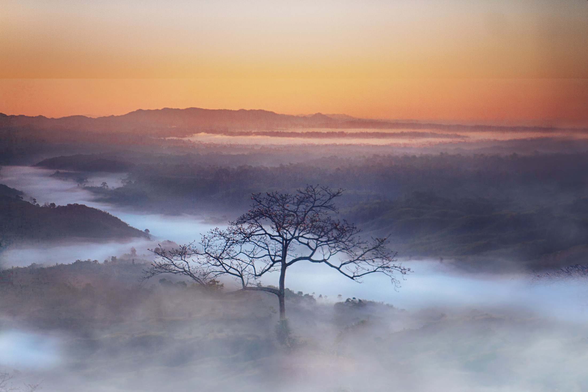

NATURE, HISTORY & THE PLACES BETWEEN
Discover Bangladesh,
one place at a time.
Find coastal escapes, ancient landmarks, and green hill country. Start with a place, a region, or something you love.
30 destinations8 divisionsEnglish & বাংলা

G.B. G.Son / Wikimedia Commons · CC BY-SA 4.0 · Cropped
Follow your interests
View all placesA FEW GOOD PLACES TO START
Famous for a reason
Eight regions. Many ways to explore.
Choose a division and discover the places within it.
PUT YOUR NEXT TRIP IN PERSPECTIVE
See how the places connect.
Explore destination pins, nearby places, and interest filters on the interactive map.